Getting started
The home screen has three big cards. Engineering Lab is where you learn and build through missions. Flight Zone is for flying for fun. Real Drone Projects is where you design a drone you could really build. The small buttons at the top open the Workshop, My Hangar (your saved drones), Photos, Sound and Credits.
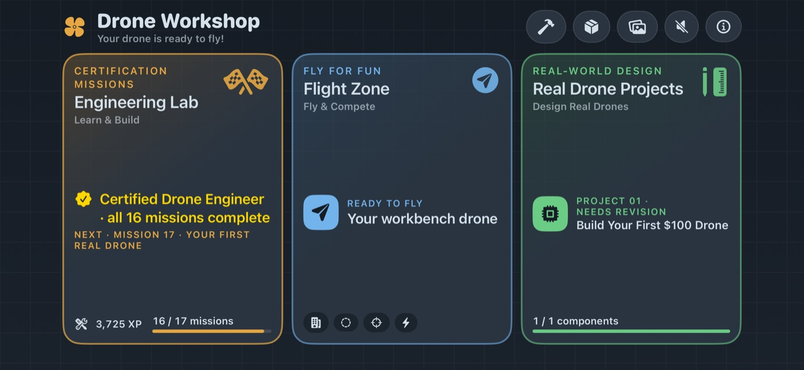
The game works the same on iPhone and iPad and is played with the device turned sideways.
Building in the Workshop
Your drone sits on a workbench. Every part is a 3D object with its own weight and job: frames, motors, propellers, batteries, the flight controller ("brain"), cameras, landing legs, cargo trays and more.
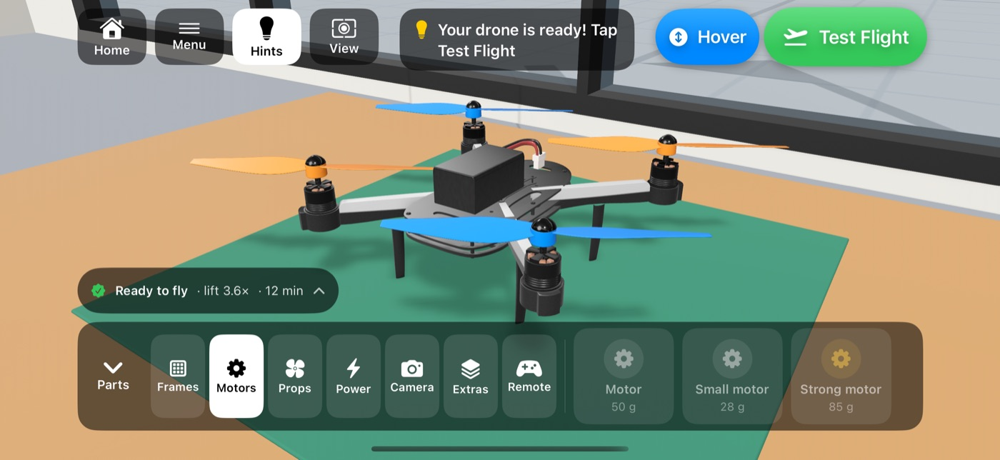
- Open the parts box and pick a group (Frames, Motors, Props, Power, Camera, Extras, Remote).
- Drag a part onto a glowing spot on the drone. It snaps into place. You can also tap a part, then tap a spot.
- Match the propellers: an orange propeller goes where the ring glows orange, a blue one where it glows blue. Neighbouring propellers spin opposite ways so the drone doesn't twist.
- Run a Hover Test to check it on the bench, then tap Test Flight.
Changing and removing parts
Tap a part on the drone to see it, swap it or Remove it. You can also drag a part off the drone, or swipe it outward. Undo puts it back. A motor takes its propeller with it.
Hover Test: find out why
The Hover Test runs the real flight physics on the bench, held by a safety line. If the drone can't lift off, tips or drains the battery too fast, it says why, and Show the engineering explains the numbers and suggests parts that would really help.
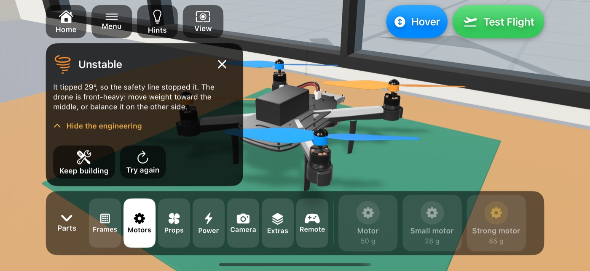
Build Impact
When you pick a part in the parts box, Build Impact shows what it would change before you fit it: weight, battery energy, lift compared with weight, and hover time.
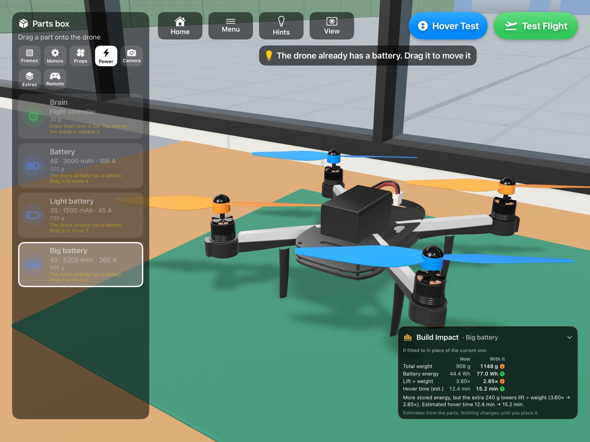
My Hangar
Save drones in My Hangar, load them back onto the bench, rename, duplicate or delete them. Five ready-made designs (Speedster, Titan, Cinemaster, Target Pro and Pathfinder) are always there to try.
Moving around
- Turn the drone: drag one finger on empty space.
- Zoom: pinch with two fingers.
- Back to the normal view: tap View.
- Hints on or off: tap Hints.
Engineering Lab
Sixteen missions in six chapters, opened one after the other: from building your first drone and making it hover, through heavy lifting, battery endurance, cargo delivery, precision flying and landing, camera inspection, fault diagnosis, wind and emergency landings, to warehouse inspection and a Final Prototype. Finishing all sixteen earns the Certified Drone Engineer badge. Mission 17, Your First Real Drone, is the graduation project (see Real Drone Projects).
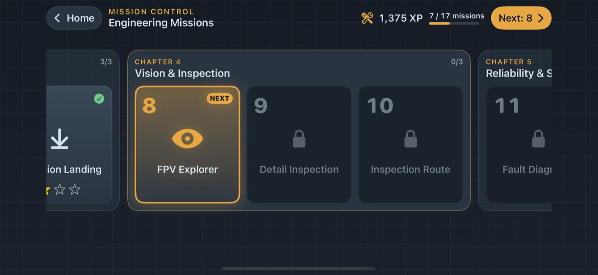
Each briefing lists the objectives. Tap Prepare Drone to go to the Workshop with the mission set up, then take the test. Results are measured from the real flight: nothing is faked, and the game never changes your drone for you. Missions give XP, up to three stars, and new parts as rewards.
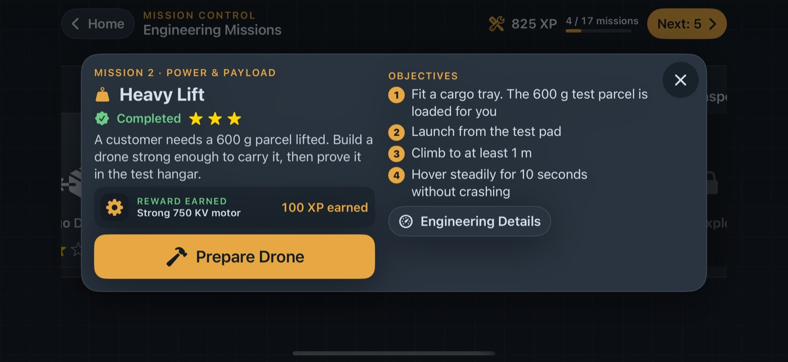
Flight Zone
Pick a drone (your workbench drone, a saved one or a ready-made design) and how to fly. Every flight happens in the indoor test hall and uses exactly the drone you chose.
Open Workshop
Free flying in the furnished test hall. Fly into one of the staged areas and an activity starts by itself: Hoop Run, Inspection Round (hold steady in each checkpoint), Landing Practice, Wind Hold in front of the big fan, or Plaque Photos with the drone camera. Wall hoops and shelves chime when you fly through or land on them. Nothing is scored, so it's a good place to practise.

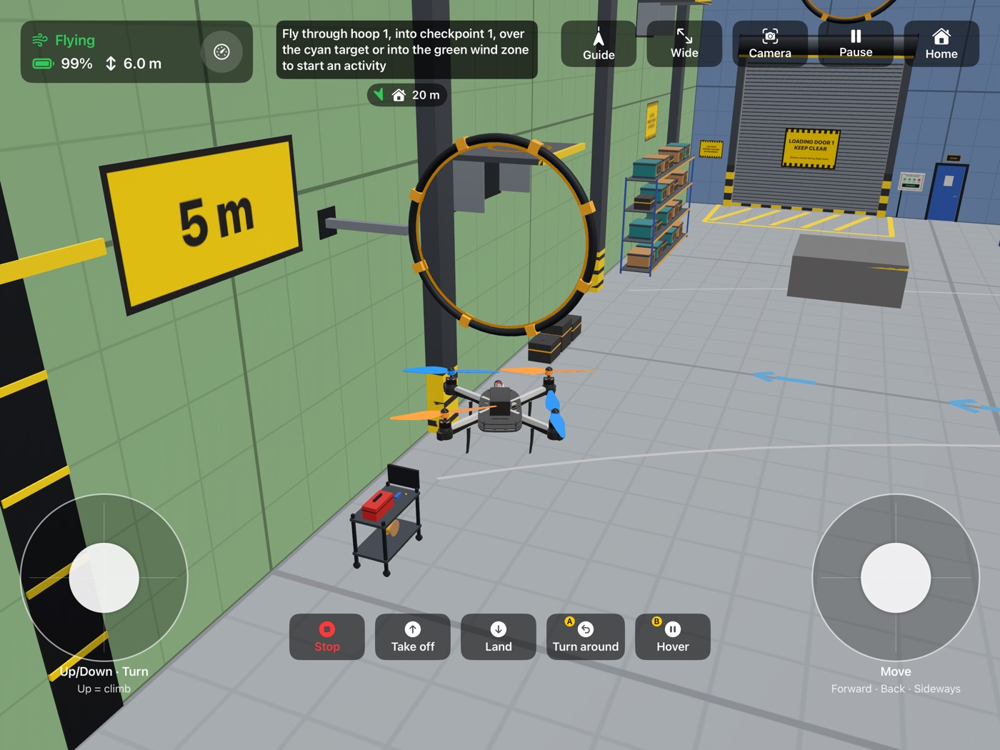

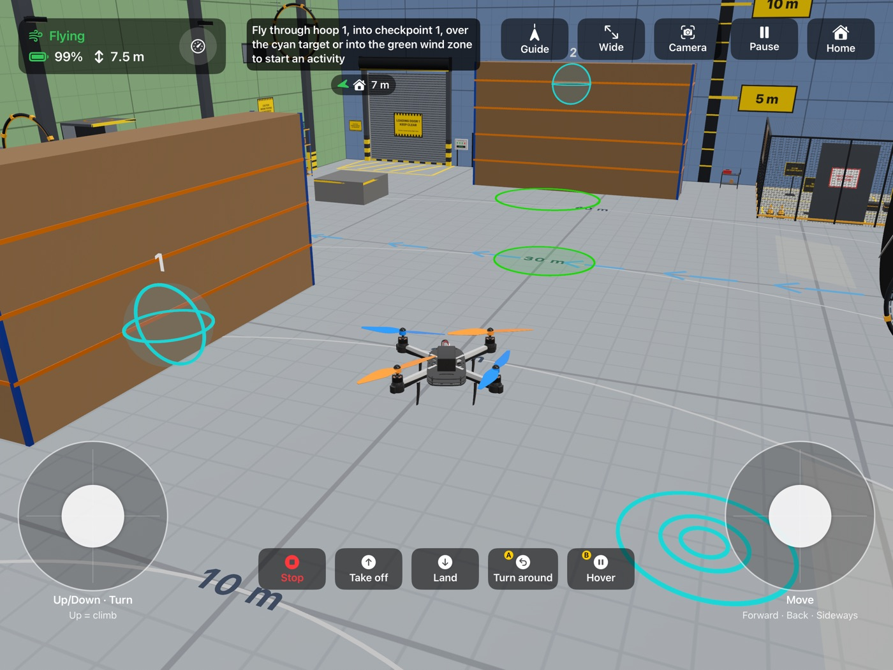
Pursuit Challenge
Follow a target drone around the hall and keep it within range for 60 seconds out of two minutes.
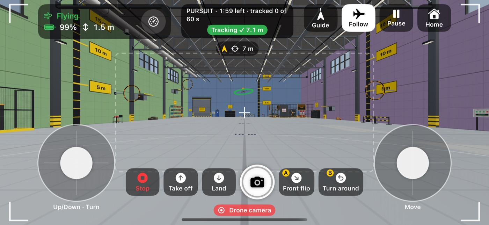
Drone Rush
Targets light up one at a time anywhere in the hall. Fly into each one and hold steady for a second before its time runs out. Streaks score more.
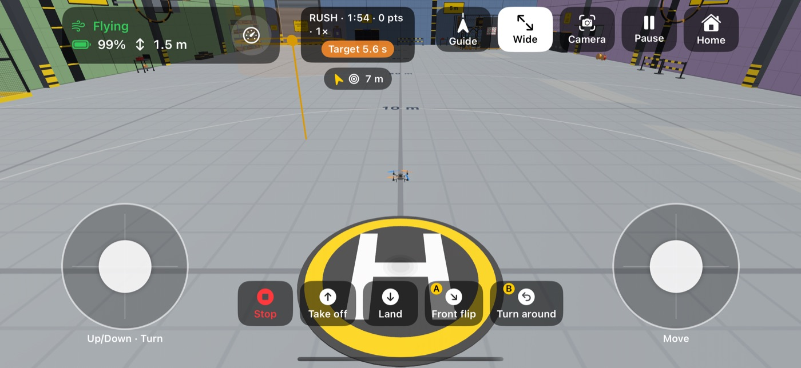
Pursuit Challenge and Drone Rush get a little harder after every two successes. You can turn that off or reset it in My Hangar → Flight Challenge Difficulty.
Flight controls
| Control | What it does |
|---|---|
| Start / Stop | Turns the motors on or off. |
| Take off / Land | Climbs to a safe height and hovers, or comes down gently. |
| Left stick | Up and down: climb or descend. Left and right: turn. |
| Right stick | Fly forward, backward and sideways. |
| A and B buttons | Remote buttons you choose in the Workshop (Remote group), such as Hover, Turn around, Fly home or a flip. |
| Camera | Look through the drone's camera (if it has one). The round shutter button takes a photo. |
| Wide | Switches between the close and the wide follow view. |
| Guide | Shows an arrow pointing to where you need to go. |
| Pause | Resume, start again, switch Assisted/Manual, change drone, or leave. |
| Home | Leaves the flight (in the air it asks first). |
Assisted mode is best for beginners: the drone holds its height and stops when you let go. In Manual mode the left stick sets the motor power directly. It's harder and closer to a real pilot's job. The gauge button on the status card opens Engineering Details: speed, tilt, battery voltage and current, weight, thrust and how hard each motor is working.
Real Drone Projects
Here players design drones from real, commercially available components. Specifications come from manufacturers' published data, and every part shows its source. Anything that couldn't be confirmed is marked Not yet verified rather than guessed.
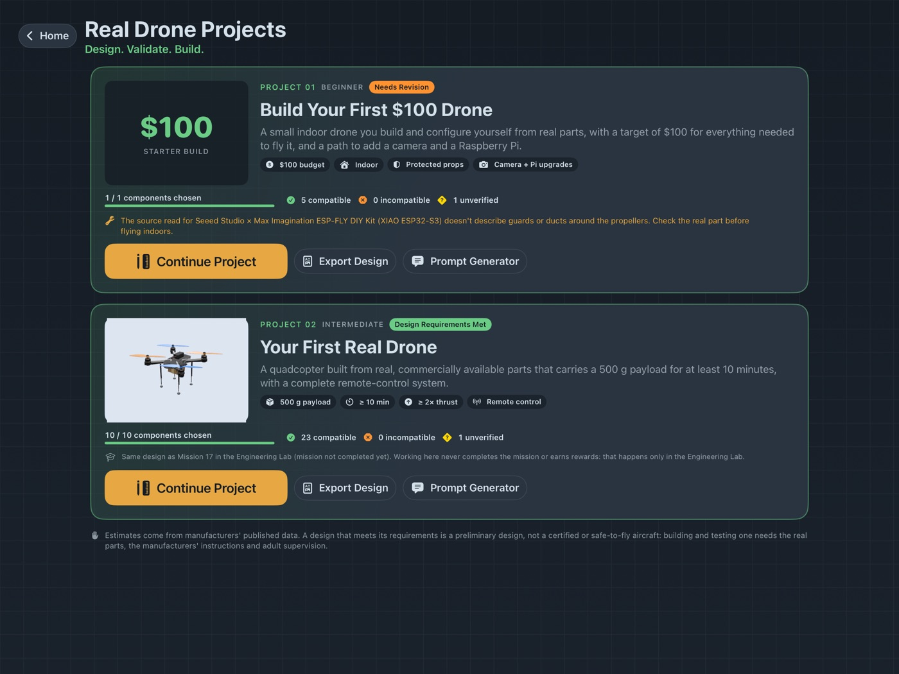
Project 01: Build Your First $100 Drone
A small indoor drone with a $100 target for everything needed to fly it. Choose a kit or individual parts, see the running total, check thrust and safety, read the assembly steps, and plan upgrades: a camera, then a Raspberry Pi as a companion computer.
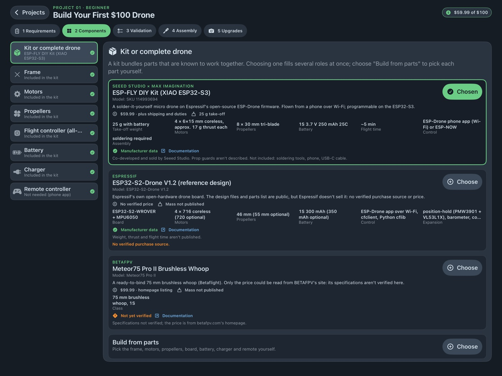
Project 02: Your First Real Drone
A bigger quadcopter that must carry 500 g for at least 10 minutes with twice as much thrust as weight. It's the same design as Mission 17 in the Engineering Lab.
Export and Prompt Generator
Export Design creates a PDF and a JSON file of the design. The Prompt Generator writes a ready-made text (design help, design review or build research) that can be copied or shared with a grown-up's help. The app doesn't contain or connect to any AI service itself.
Safety. A design that passes these checks is a preliminary design. It isn't a certified or safe-to-fly aircraft. Prices are indicative (shipping and taxes not included) and can change. Building, charging batteries and flying a real drone need the real parts, the manufacturers' instructions and adult supervision, and local drone rules apply.
For parents and teachers
- No accounts, no ads, no in-app purchases, no internet needed. Everything runs on the device.
- Grown-up check. Anything that leaves the app (a manufacturer's documentation page, a credits link, or the share sheet for exports and prompts) first asks a grown-up to solve a multiplication question.
- Learning goals: weight and thrust, balance and centre of mass, battery energy and flight time, trade-offs between parts, testing and diagnosing faults, and reading real component specifications.
- Physics, not scripts: the drone flies according to the parts fitted. A missing motor, a reversed propeller or a heavy camera really change how it flies.
Questions
My drone won't take off.
Run a Hover Test in the Workshop: it says what's wrong. Common causes are a missing motor, propeller or battery, a propeller on the wrong colour, or motors that are too weak for the drone's weight.
The drone keeps drifting or tipping.
Check that the weight is balanced (a heavy camera or battery on one side makes that side's motors work harder), and use Assisted mode from the Pause menu.
A mission is locked.
Missions open in order. Finish the one before it in Mission Control.
Some parts are locked in a mission.
Some parts are mission rewards. They're available in missions once earned. In the Workshop on its own and in Flight Zone nothing is ever locked.
Can I really build the drone from Real Drone Projects?
The parts are real products, but the app only checks the design on paper. Treat the result as a starting point for research with an adult, check every part's documentation, and follow the manufacturers' instructions and local rules.
Why did a web page ask a maths question?
That's the grown-up check. It keeps young players from leaving the app by accident.
How do I start over?
Deleting the app removes all its saved data from the device. Reinstalling starts fresh.
Privacy policy
Last updated: 18 November 2026
Drone Workshop does not collect, store on a server, share or sell any personal information. It works completely offline: no accounts, no ads, no analytics, no tracking and no in-app purchases.
What stays on the device
The game saves your drone designs, My Hangar, mission progress, photos taken in the game, project designs and settings (such as sound and hints) in the app's own storage on your iPhone or iPad. This data never leaves the device through the app and is deleted when you delete the app. It may be included in your own iCloud or computer backup of the device, as for any app.
What the app doesn't use
The app doesn't use the device's camera, microphone, location, contacts or photo library, and it doesn't make any network connections.
Sharing and links
Files and text are only shared when a user chooses Export Design or Share Prompt and passes the grown-up check; they then go wherever the user sends them with the system share sheet. Links to manufacturers' documentation and to the credits open in Safari, also only after the grown-up check. Those websites have their own privacy policies.
Children
The app is made for children and collects no information from them, so there's nothing to review or delete beyond the on-device data described above.
Changes
If this policy changes, the new version will be posted on this page with a new date.
Contact
Found a problem or have an idea? Please open an issue on GitHub. Say which device you're using and what happened; a screenshot helps a lot.